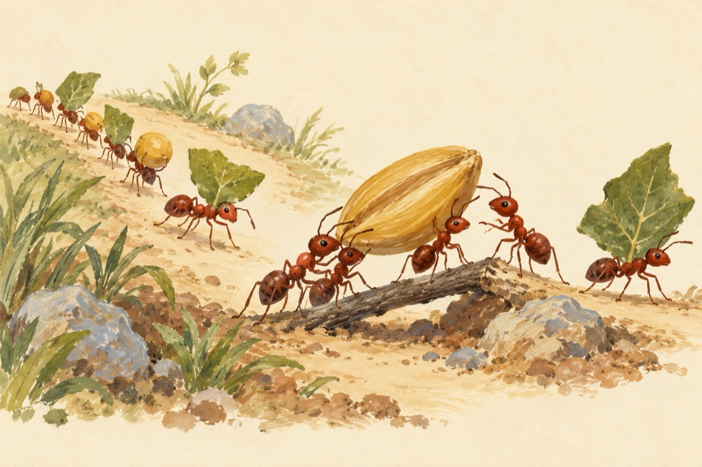

Drumul furnicilor
E o cale nesfârșită-n aparență
Un dute-vino cu iz de anarhie
Și nu e întâmplătoare-a lor prezență
Determinată de talent și hărnicie
Precum cămilele în drum de caravană
Își iau deșertul tot și-l calcă în copită
Și ea furnica, cu greu băgată-n seamă
Își duce greutatea prăzii înzecită
Pe drumul ce-l parcurg cu strategie
Prin căi ce mintea nu te duce
Lucrează strâns unite ca-n familie
Și orice-obstacol apărut îl pot învinge!
De la furnici învățat-am să muncim
De când umblăm acoperiți cu-o frunză
De la albine cum viața să ne-o construim
De la paianjeni cum să țesem pânza
De la acestea toate noi am învățat
Și până astăzi zi de zi-n continuu am evoluat.
Vasile Groza
Apare și în: Privește-mă în ochi (2018).